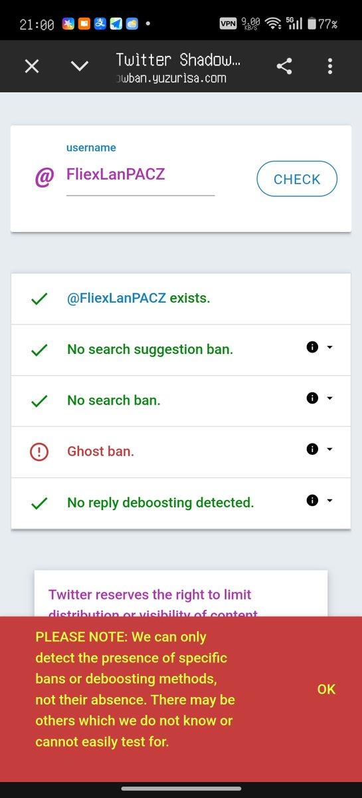
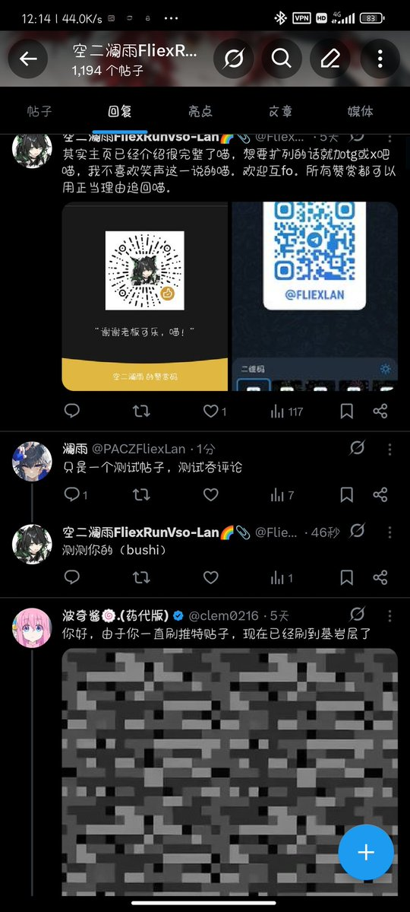

櫻川由奈🏳️⚧️Sakura🍥
@Xiaoyi_0324
@FliexLanPACZ 那只是你被ghost ban了


空二澜雨FliexRunVso-Lan🌈📎
@FliexLanPACZ
emmmmm，x的吞评论有点过分了，如图一我在我的小号所查看的帖子界面并无评论。如图二，我的评论在我查看图一所示界面的时候已经发送，如图三我的评论在发送之后直接从原帖的评论区消失，如此可以证明推特的吞评论机制是发送后几秒内如不出现即视为吞评论（不严谨测试，可能出误差） https://t.co/X63sG7JOS1